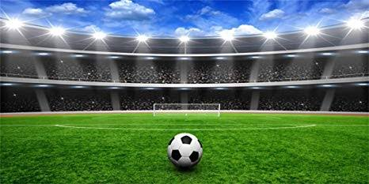

Football is a family of team sports that involve, to varying degrees, kicking a ball to score a goal. Unqualified, the word football normally means the form of football that is the most popular where the word is used. Sports commonly called football include association football. The pitch is typically made of natural turf or artificial turf, although amateur and recreational teams often play on dirt fields. Artificial surfaces must be green in colour.
All line markings on the pitch form part of the area which they define.
Dimensions
| Pitch length |
90 m |
| Pitch width |
45 m |
| Circle Radii |
9.1 m |
Timings
Opening => 6:30 am
Closing => 8:30 pm